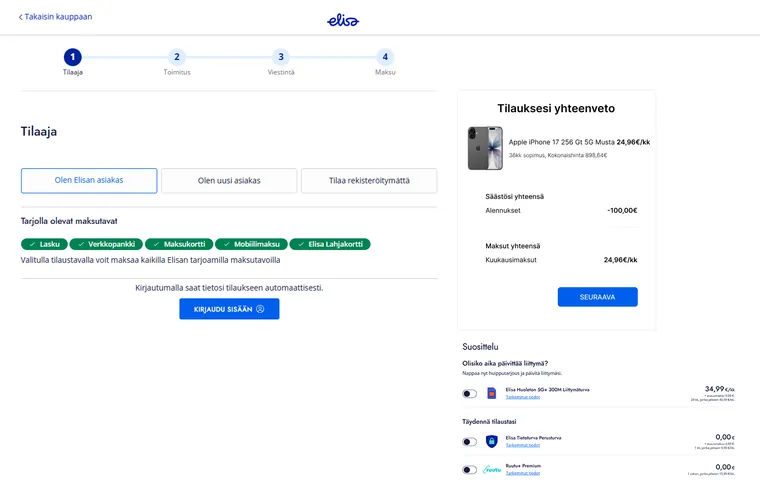
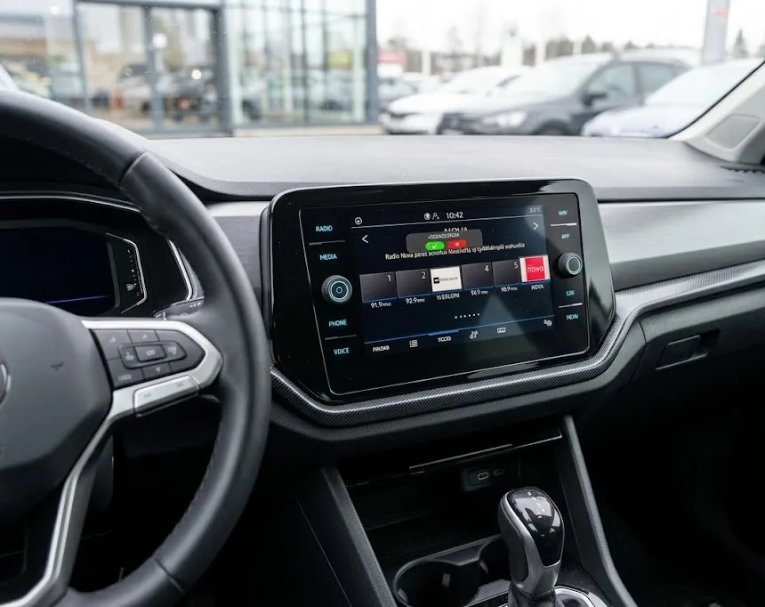
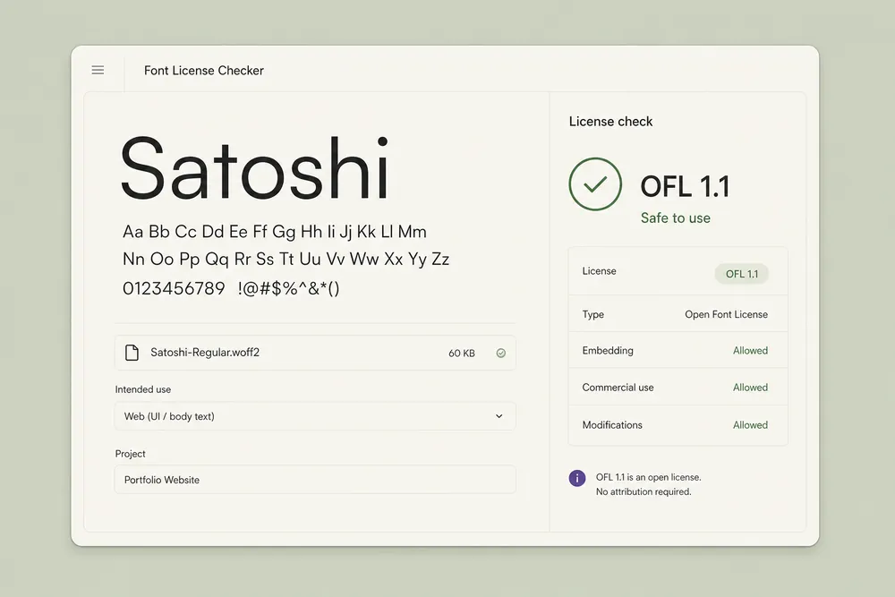

01 / 04Checkout / Conversion Elisa.fi Checkout UX Audit A self-initiated audit of how blocking upsells and weak product reassurance interrupt purchase intent. Audit outcome Two concrete intervention points for a calmer, more reassuring checkout. 5 min read
Product Designer
Into AI, automation & thoughtful details
Moi I'm Petteri. I design digital products that make complex things feel clear.
More about me & how I workMore product work
Focused audits, interaction experiments, and product concepts.
 02 / 04Reading / Focus
Tahti
A working Chrome extension exploring whether controlled pacing can reduce visual load and help people stay with text.
Prototype outcome Turned dense selected text into a focused reading session with controllable pace, pause, and rewind.
4 min read
02 / 04Reading / Focus
Tahti
A working Chrome extension exploring whether controlled pacing can reduce visual load and help people stay with text.
Prototype outcome Turned dense selected text into a focused reading session with controllable pace, pause, and rewind.
4 min read

03 / 04In-car / Attention Automotive UX Redesigning an incoming-call interaction for the split attention and physical constraints of a moving car. Interaction outcome Reduced the call flow to one glanceable decision for a divided-attention context. 2 min readBuild Lab
Experiments, utilities & prototypesSmall builds with a clear reason to exist.
I like building small things around real problems: tools that reduce friction, side projects that test an idea, and AI-assisted prototypes that make a problem easier to understand.
 CourtTap
A small scoring tool for casual padel and tennis, built around the awkward moment of tracking a match mid-game.
CourtTap
A small scoring tool for casual padel and tennis, built around the awkward moment of tracking a match mid-game.

Font License Checker A small utility idea for making font licensing less vague before a type choice becomes a product risk.Small utilities for audits, copy checks, accessibility decisions, and workflow cleanup.